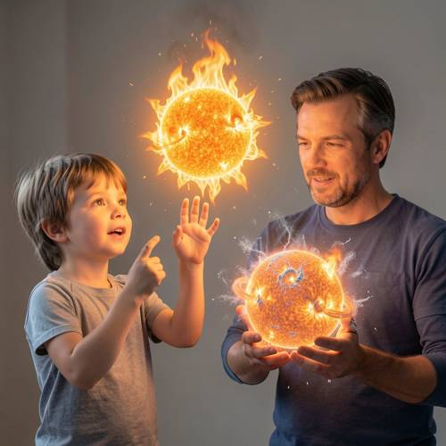
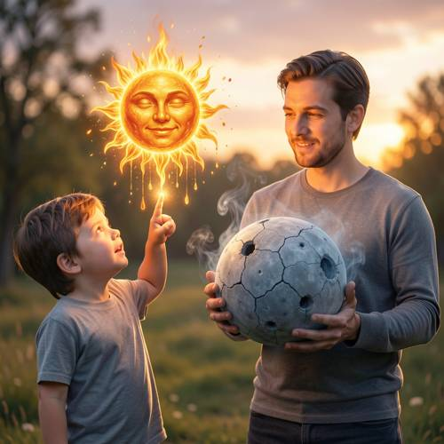

Relationship — A child drew a floating, burning sun in the air with his fingers, whil
A child drew a floating, burning sun in the air with his fingers, while an adult next to him held a cold, extinguished model of the sun.

Direct — one call, no iteration

Continuum — Kimi K3 + FLUX.2-klein-9B
Judge — Direct
FAILRelationship - Comparison — The image displays two sun-like objects. One, near a child, is a bright, fiery sphere. The other, held by an adult, is also a glowing, fiery sphere, albeit with different details like rings and particles. It does not appear to be a 'cold, extinguished model' as it is also radiating light and heat. Therefore, the specified comparison between a burning object and an extinguished one is not present.
PASSAction - Hand (Character/Anthropomorphic) — The image shows a child with one hand pointing and the other hand raised near a floating object, consistent with interacting with it with his fingers. The adult is cupping a spherical model with both of his hands. The hands of both the child and the adult are anatomically correct, with five fingers on each visible hand.
FAILAction - State — The image depicts a sun-like object floating in the air next to the child. Both this object and the one held by the adult are shown in a 'burning' state, emitting fire and light. The state of 'extinguished' is not represented in the image, as both objects are glowing.
PASSCompound - Imagination — The image depicts a fantastical scene where a child appears to be interacting with a floating, burning sun in mid-air, using his fingers to point at it. This is an impossible event in reality and fits the criteria for an imaginative concept.
Judge — Continuum
PASSRelationship - Comparison — The image displays a clear comparison between two objects. One is a vibrant, yellow-orange, anthropomorphic sun that is glowing and surrounded by flames. The other is a large, grey, cratered sphere held by the adult, which appears cold, cracked, and lifeless in color, fitting the description of a cold, extinguished model.
PASSAction - Hand (Character/Anthropomorphic) — The child on the left is pointing his right index finger up at the floating sun, an action that aligns with 'drew ... with his fingers' in a magical context. His hand is well-formed. The adult on the right is holding the large grey sphere with both of his hands, which are also depicted correctly without any anatomical flaws.
PASSAction - State — The stylized sun is shown 'floating' in the air. It is depicted as 'burning', with a bright glow, flames, and dripping light. The sphere held by the adult is grey and cracked, with wisps of smoke rising from it, which visually suggests a cold or 'extinguished' state.
PASSCompound - Imagination — The image depicts a fantastical scene where a child appears to conjure a 'floating, burning sun' in the air with his finger. This is an act of imagination and is impossible in reality.
What the agent did
Thinking
Let me generate an image of a child drawing a floating burning sun in the air with fingers, while an adult holds a cold extinguished sun model. Use flux2-klein.
Step 1 — `generate_image`
{
"model": "flux2-klein",
"prompt": "A whimsical magical scene: a young child stands reaching up, fingertip glowing, having just drawn a floating burning sun made of fire and golden flames hovering in mid-air beside them, sparks and embers dripping from the painted fiery sun; next to the child stands an adult holding a cold extinguished model of the sun in their hands \u2014 a gray, cracked, ashen sphere with faint dead spots, cold blue-gray in color, wisps of smoke. Contrast between warm glowing fiery sun drawn in the air and the cold dead gray model. Soft evening outdoor background, warm light from the flaming sun illuminating their faces, photorealistic with a touch of magic."
}
Result img_0
Thinking
The image looks quite good: child pointing up at a floating burning sun, adult holding a cold cracked gray sphere. The sun has a face — the prompt implied a drawn sun, and a face is a nice "child drawing" touch, arguably acceptable. The child's finger appears to be touching/glowing at the sun's drips. Composition matches well. I'll mark best and stop. Could consider removing the face, but it's charming and consistent with "child drew". Good enough is a stop condition.
Model
The image captures all the elements of the prompt well: - **A child** reaching up with a glowing fingertip, having drawn a sun in mid-air - **A floating, burning sun** hovering in the air — golden flames, dripping embers, sparks (it even has a face, fitting the idea that a child *drew* it) - **An adult beside him** holding a cold, extinguished sun model — a gray, cracked, ashen sphere with smoke wisps - **Strong visual contrast** between the warm living sun and the cold dead one, with warm light illuminating both figures The composition, lighting, and storytelling all match the description. Marking this as my final result.
Step 2 — `mark_best`
{
"image": "img_0",
"reason": "All prompt elements present and correct: child drawing a floating burning sun with his finger, adult holding a cold extinguished cracked gray sun model, clear warm/cold contrast."
}
Model
The image is complete and matches the description: a child has drawn a glowing, burning sun that floats in the air with flames and dripping embers at his fingertip, while the adult beside him cradles a cold, cracked, ashen-gray model of the sun with faint smoke rising from it. The warm light of the fiery sun against the dead gray sphere gives exactly the contrast the scene calls for.